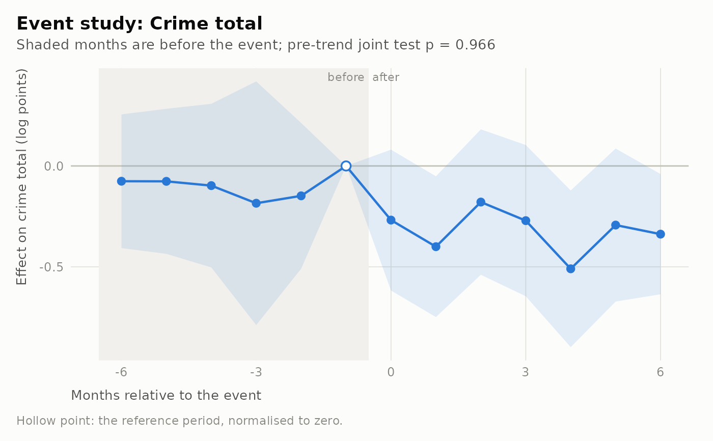

Estimates one coefficient per month relative to the intervention, so that the path of the outcome before and after the event is visible rather than summarised in a single number. The months before the event are the pre-trend test: if the outcome was already moving, the parallel-trends assumption behind any difference-in-differences estimate is in doubt.
Arguments
- panel
A
lamp_panelfromlamp_panel().- outcome
The outcome column, for example
"crime_total"or a crime type key fromlamp_crime_types().- event
A
lamp_treatment()object of typeeventorbinary, or the name of a panel column holding relative time.- window
The first and last relative month to estimate, default
c(-12, 12). Months outside it are pooled into endpoint bins so that they still contribute to the fixed effects.- reference
The omitted relative month, default
-1(the month before the event).- cluster
"area"(default) or"force".- family
"poisson"(default, a Poisson pseudo-likelihood suited to counts),"negbin","ols_log"or"ols_ihs".- controls
Optional panel columns to include as covariates.
- staggered_ok
With several adoption dates, delegate to
lamp_did_staggered()instead of stopping.
Value
A lamp_estimate of class lamp_event_study. Its coefficients
carry a rel_time column, and diagnostics$pretrend_p holds the joint
test that every pre-period coefficient is zero.
Identifying assumption
In the absence of the event, treated areas would have followed the same
path as controls, net of area and month fixed effects. The pre-period
coefficients test a necessary consequence of this, not the assumption
itself: passing the test does not establish parallel trends, and with few
areas the test has little power to detect a trend that matters. See
lamp_pretrends().
Staggered adoption
When areas adopt at different dates, relative-time dummies in a two-way
fixed effects regression use already-treated areas as controls and are
biased. This function never does that: with more than one adoption date it
stops and explains, or, with staggered_ok = TRUE, hands the work to
lamp_did_staggered() and says so. The result is then a
lamp_did_staggered estimate, not an event study.
Examples
sim <- lamp_simulate(n_areas = 24, n_months = 24, design = "event", effect = -0.25, seed = 4)
truth <- attr(sim, "truth")
# half the areas are treated; the rest are the comparison group
tr <- lamp_treatment(
sim, "event",
date = truth$event_date, scope = truth$treated_areas, window = c(-6, 6)
)
es <- lamp_event_study(sim, "crime_total", tr, window = c(-6, 6))
es
#>
#> ── streetlamp estimate: lamp_event_study
#> Outcome: crime_total; family: Poisson pseudo-likelihood on counts
#> Treatment: event; clustered by area
#> Identifying assumption: Parallel trends around the event: without it, treated
#> areas would have followed the control path, net of area and month fixed
#> effects. Pre-period coefficients test a consequence of this, not the
#> assumption.
#> Sample: 576 area-months in 24 areas; 0 rows dropped for coverage.
#> Pre-trend joint test: p = 0.966
#> Dispersion: 0.903
#> Months since event Estimate Std. error 95% CI p
#> ────────────────── ──────── ────────── ───────────────── ─────
#> -6 −0.0757 0.169 [−0.407, 0.256] 0.654
#> -5 −0.0763 0.183 [−0.436, 0.283] 0.677
#> -4 −0.0974 0.207 [−0.503, 0.308] 0.638
#> -3 −0.185 0.308 [−0.789, 0.419] 0.549
#> -2 −0.148 0.184 [−0.509, 0.213] 0.422
#> -1 (reference) 0 0 [0, 0]
#> 0 −0.268 0.178 [−0.617, 0.0808] 0.132
#> 1 −0.4 0.178 [−0.749, −0.0512] 0.025
#> 2 −0.179 0.184 [−0.539, 0.181] 0.330
#> 3 −0.271 0.191 [−0.646, 0.104] 0.156
#> 4 −0.51 0.198 [−0.898, −0.122] 0.010
#> 5 −0.293 0.193 [−0.672, 0.0862] 0.130
#> 6 −0.338 0.152 [−0.636, −0.04] 0.026
plot(es)
